Die Aufnahmen stammen aus dem Emulator, der die Bedienoberfläche der Firmware unverändert
übersetzt – so sieht die Uhr am Handgelenk aus. Stationen, Messwerte und Meldungen sind
Beispieldaten; XX0XXX-00 ist der Platzhalter, bis das eigene Rufzeichen eingetragen ist.
So hängen die Schirme zusammen. Nach rechts wischen: Ziffernblatt → Meldungen → Senden → Module → Stationen → Ziffernblatt, nach links dieselbe Runde rückwärts. Senkrecht am Ziffernblatt: nach oben Wecker → Kalender → Update → Setup → Info → Zeitzone, nach unten dieselbe Säule rückwärts.
Ziffernblatt
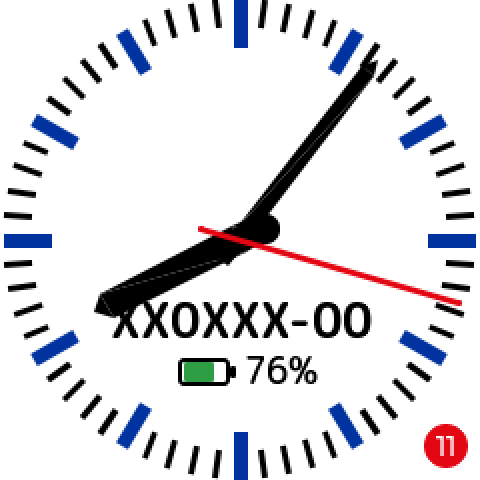
BahnhofsuhrDer Startschirm: Zeiger mit Stop-to-Go-Sekunde, Rufzeichen, Akkustand und die rote Zahl ungelesener Meldungen. Die Krone führt von überall hierher zurück.
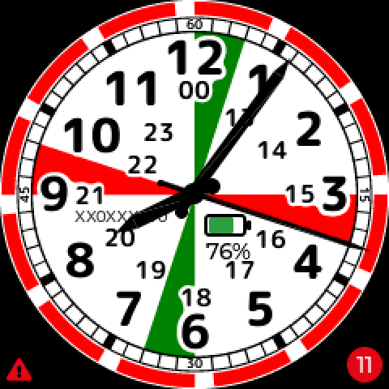
FunkraumuhrZweites Zifferblatt nach der Seefunk-Funkraumuhr: die farbigen Keile sind die Funkstille-Zeiten.
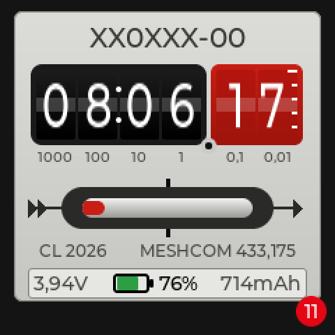
StromzählerDrittes Zifferblatt: die Uhrzeit als rollendes Zählwerk wie bei einem Ferraris-Zähler, darunter Akkuspannung, Ladestand und Restkapazität.
Meldungen und Senden
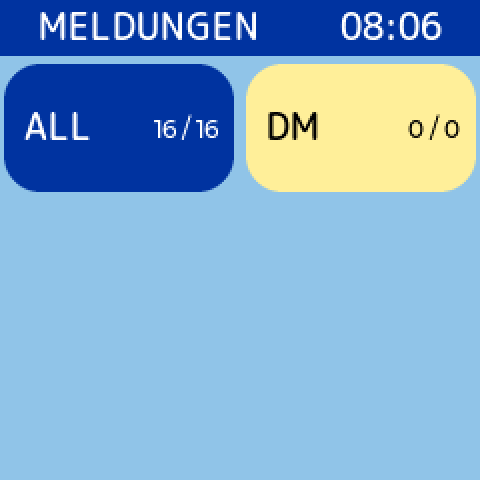
Meldungen – ÜbersichtVom Ziffernblatt nach rechts wischen. Je Ebene ein Feld (ALL, DM, die eigenen Gruppen) mit „neu / gesamt“; volle Farbe heißt: hier wartet etwas Ungelesenes.
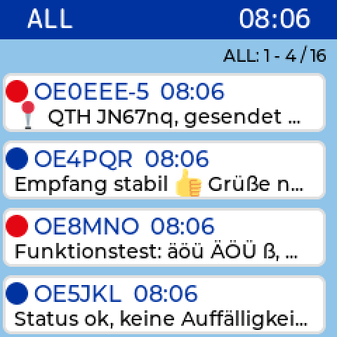
MeldungslisteEin Tipp auf ein Feld öffnet die Liste dieser Ebene: Absender, Uhrzeit, Textanfang, Emojis werden farbig dargestellt.
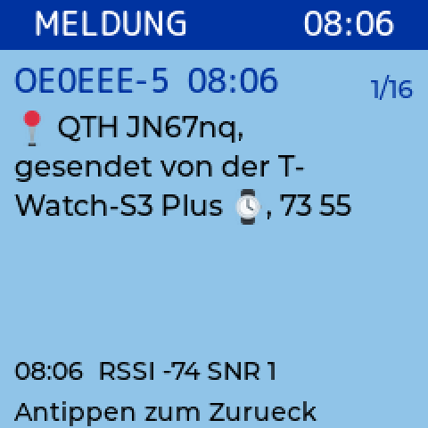
Meldung im DetailDer volle Text mit Empfangsstärke (RSSI) und Signal-Rausch-Abstand (SNR). Ein Wisch nach rechts antwortet genau dieser Meldung.
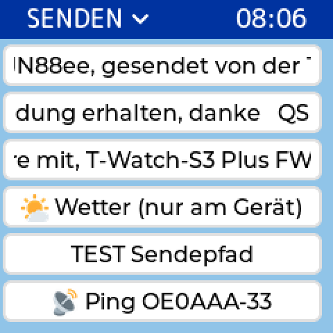
SendenFünf vorbereitete Textbausteine, ein Tipp sendet. Die sechste Karte pingt die zuletzt gehörte Station. Die Farbe der Karte zeigt, ob eine Quittung kam.
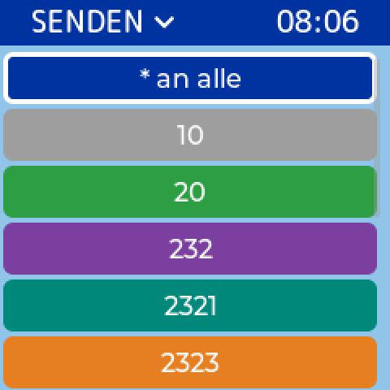
Ziel wählenEin Tipp auf die Kopfzeile klappt die Ziele auf: alle, die eigenen Gruppen in ihren Farben, Partner aus Direktmeldungen und zuletzt gehörte Stationen.
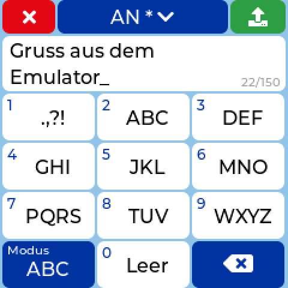
SchreibenFreier Text mit Telefontastatur und Wörterbuch. In „Senden“ senkrecht wischen; oben rechts wird abgeschickt.
Stationen
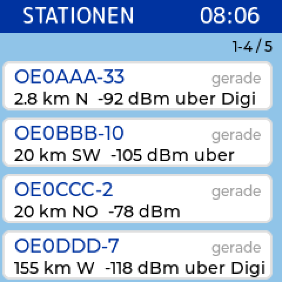
StationenVom Ziffernblatt nach links wischen. Wer wurde gehört, wie weit, in welcher Richtung, wie stark und ob direkt oder über einen Digipeater.
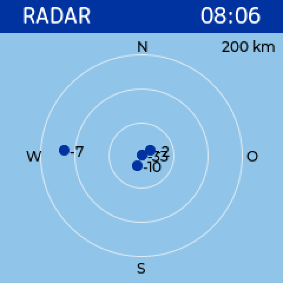
RadarVon den Stationen nach unten wischen: die eigene Position in der Mitte, gehörte Stationen als Punkte ringsum, Norden oben.
Module
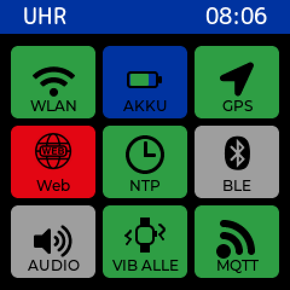
Kacheln – Seite UHRVom Ziffernblatt zweimal nach links wischen oder ein Tipp auf BOOT. Jede Kachel ist Schalter und Anzeige zugleich; ein Langdruck öffnet die Detailseite.
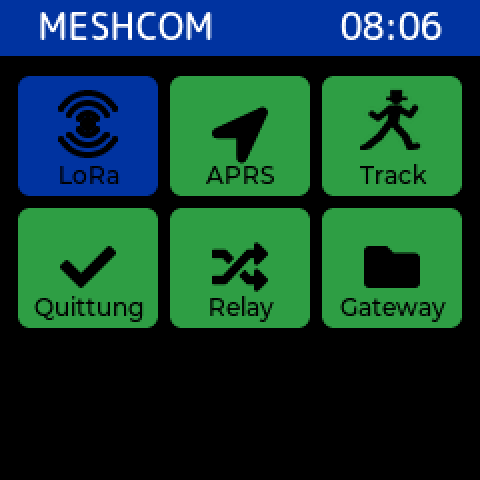
Kacheln – Seite MESHCOMSenkrecht wischen: LoRa, Positionsbake, Track, Quittungen, Weiterleitung und Gateway – alles rund ums Funken.
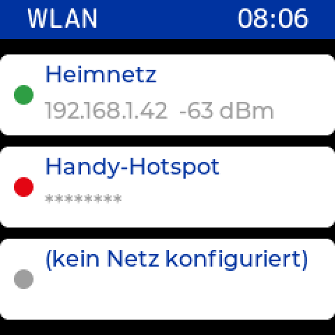
WLANBis zu drei gespeicherte Netze mit Zustand, Adresse und Empfangsstärke.
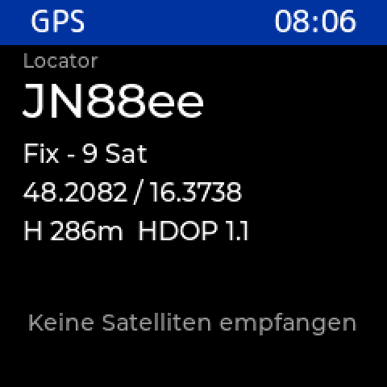
GPSLocator, Fix mit Satellitenzahl, Koordinaten, Höhe und Genauigkeit (HDOP).
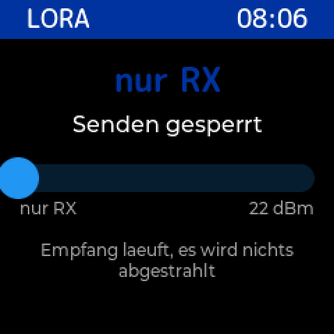
LoRaSendeleistung in neun Stufen. Ganz links steht der reine Empfangsbetrieb: die Uhr hört mit, sendet aber nichts.
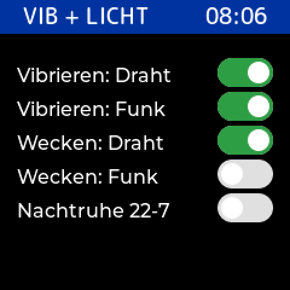
Vibration und LichtWofür die Uhr vibriert oder weckt – getrennt nach Internet und Funk – und die Nachtruhe.
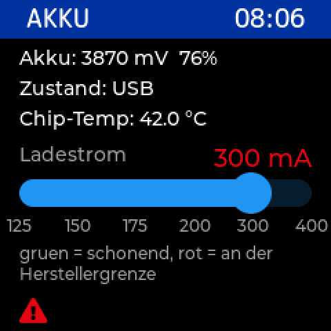
AkkuSpannung, Ladestand, Ladezustand, Chiptemperatur und der Ladestrom als Regler.
Säule am Ziffernblatt
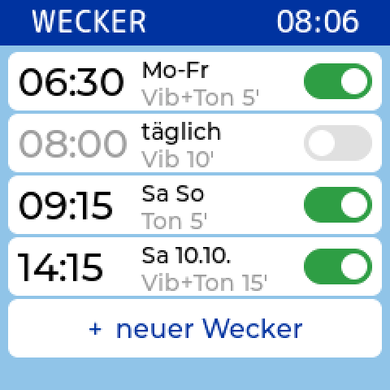
WeckerVom Ziffernblatt nach oben wischen. Bis zu acht Wecker, nach Uhrzeit geordnet, je Karte Wiederholung, Signal und Schlummerzeit.
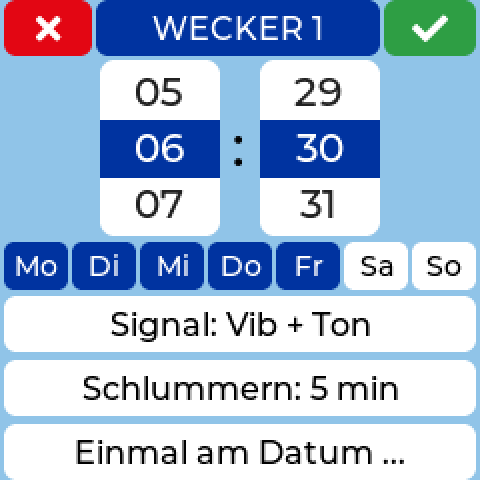
Wecker bearbeitenUhrzeit auf Walzen, Wochentage, Signal, Schlummerzeit oder ein festes Datum.
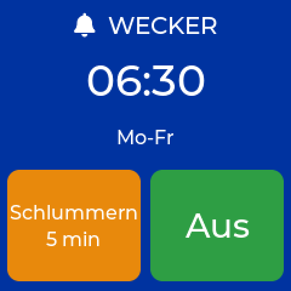
Wecker klingeltZwei große Felder: Schlummern oder Aus.
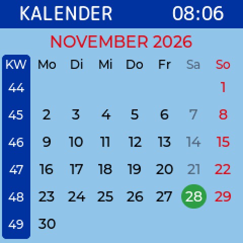
KalenderVom Wecker weiter nach oben: der laufende Monat mit Kalenderwochen, heute grün; waagrecht wischen blättert.
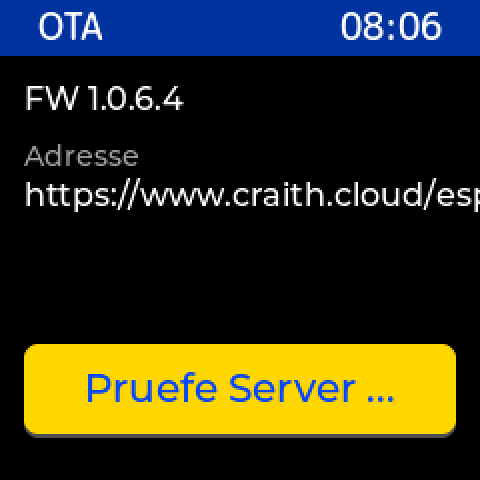
UpdateWeiter nach oben: neue Firmware über WLAN direkt von diesem Server, ohne Kabel.
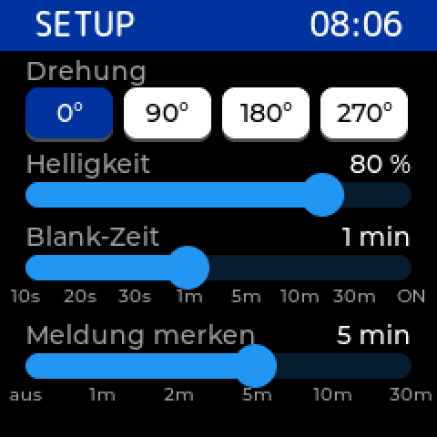
SetupDrehung, Helligkeit, Abschaltzeit des Schirms und wie lange eine neue Meldung stehen bleibt.